From registering an engine to playing and reviewing a game
Screenshots were captured on Linux with the English interface.
Register USI engines for playing games and analysis
Choose Settings → Engine Settings to open the engine registration dialog. The list is empty until you register your first engine.
You can register Hayanagi, the USI engine included as a ShogiBoardQ submodule. Its guide explains where to find the executable and how to adjust playing strength and other settings.
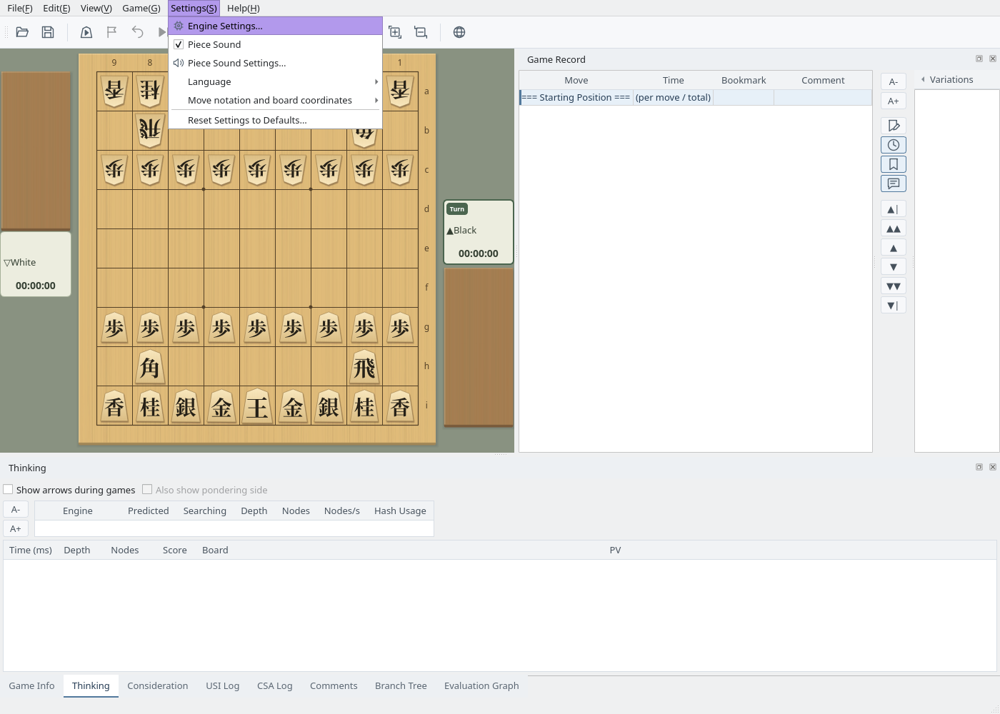
Main window: choose Settings → Engine Settings
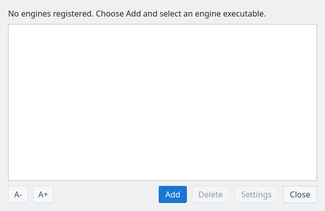
Engine registration dialog: initial state
Click Add and select the executable file for a USI engine.
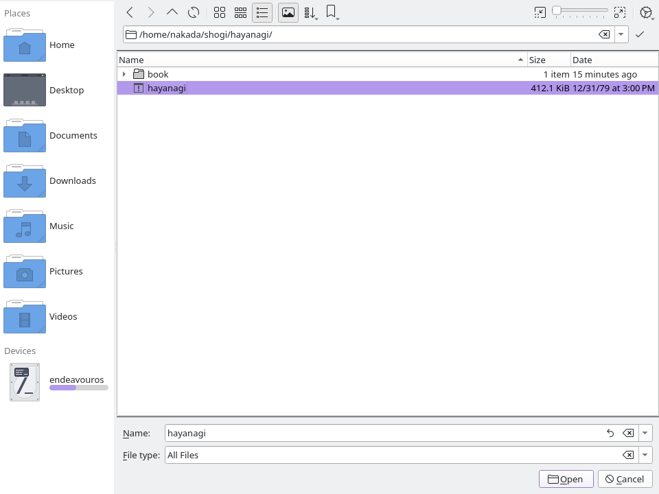
File selection dialog: select the Hayanagi executable (hayanagi)
Once the engine is recognized successfully, it is added to the list.
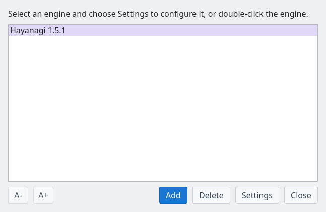
Engine registered: the engine now appears in the list
Click Settings to adjust engine options such as hash size and thread count.
Under Pondering, enable Think during the opponent's turn to let a compatible engine think ahead using its predicted reply. This also works with engines such as Gikou 2 that do not list USI_Ponder in their options. Existing USI_Ponder preferences are preserved; engines without a saved setting start with pondering disabled.
Normally leave Send USI_Ponder even if the engine does not report it enabled. Disable it for engines that report an unsupported option error. The GUI can still start pondering for compatible engines when this notification is disabled. Settings are saved per engine and apply the next time the engine starts.
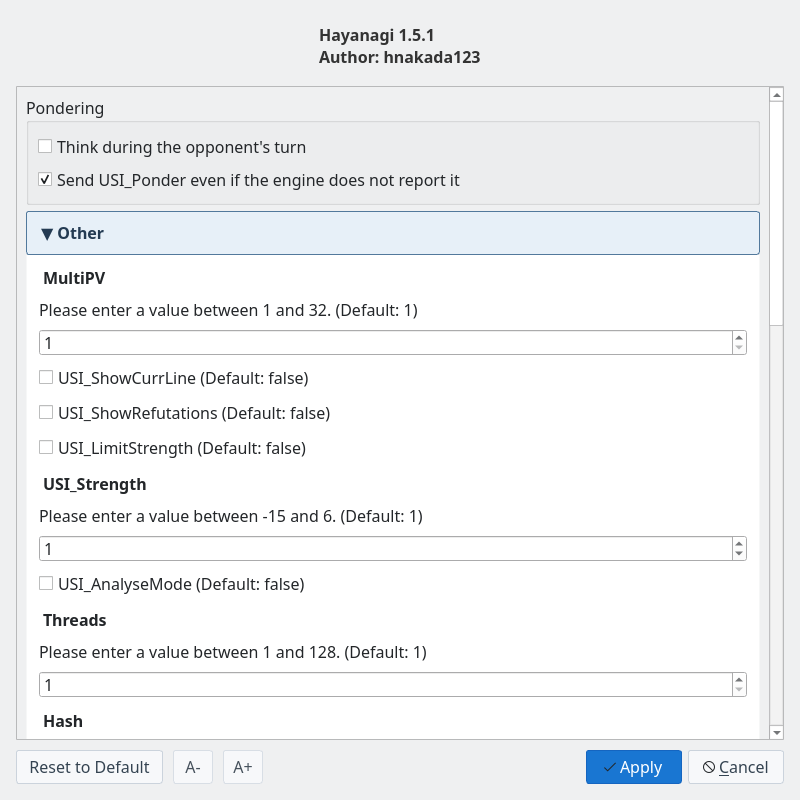
Engine settings: adjust hash size, thread count, and other options
You can register multiple engines and choose between them for games, including engine vs. engine matches.
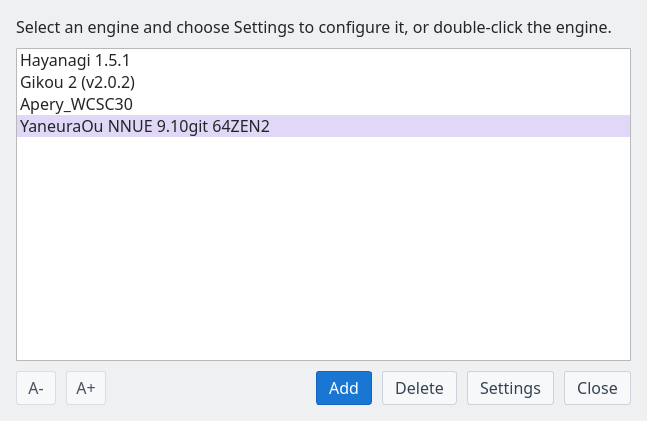
Multiple registered engines: choose the right one for each task
Configure game options in the game dialog
Choose Game → Game to open the game dialog. You can configure the following options.
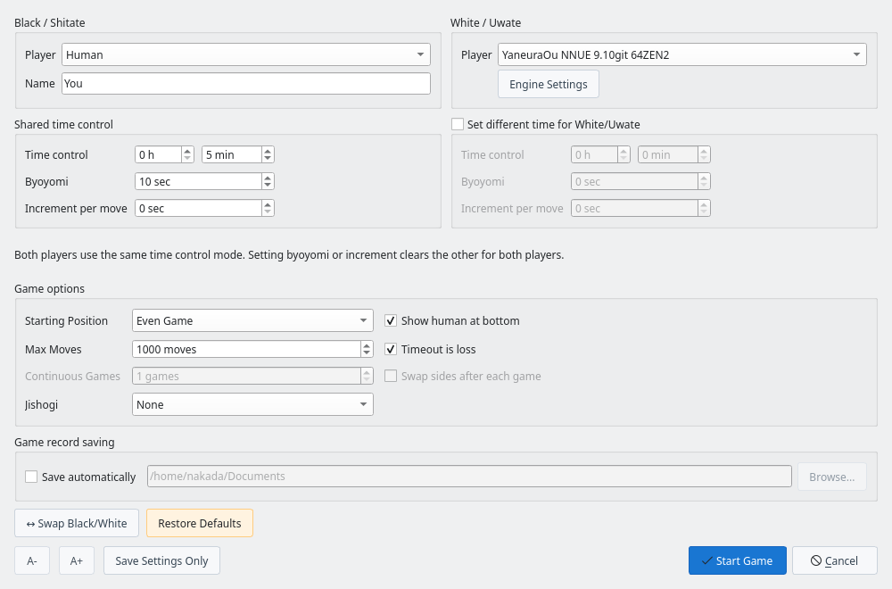
Game dialog: set players, time controls, and the starting position
View the game record and engine thinking information in real time
Once the game starts, the Thinking tab shows the engine's thinking information in real time.
Enable “Show arrows during games” in the Thinking tab to display the engine’s latest best candidate for the side to move as a solid red arrow. “Also show pondering side” adds a blue dashed arrow for the pondering engine’s reply and shows the assumed opponent move in the Thinking tab. This reply is conditional on that predicted move being played. Both display settings are saved and do not change the engine’s pondering setting. During consideration, arrows follow the settings in the Consideration tab.
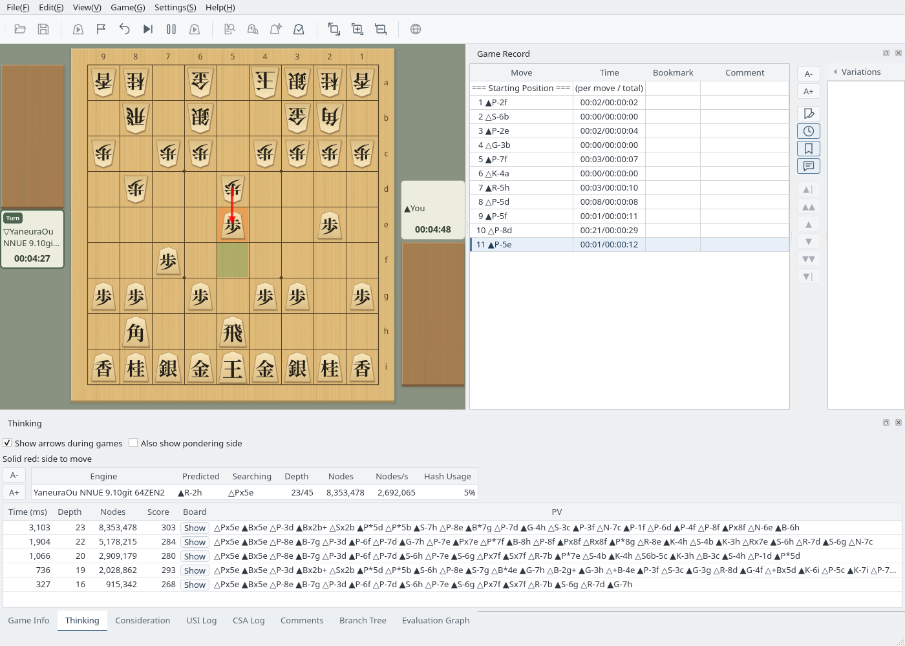
Thinking tab: live engine thinking information
The USI Communication Log tab shows messages exchanged between the GUI and engine using the USI protocol.
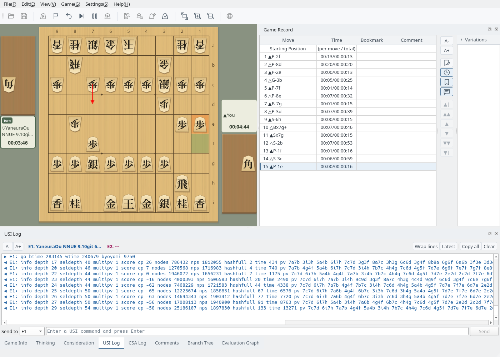
USI communication log: live protocol messages between the GUI and engine
The principal variation window lets you replay the engine's line on a shogi board.
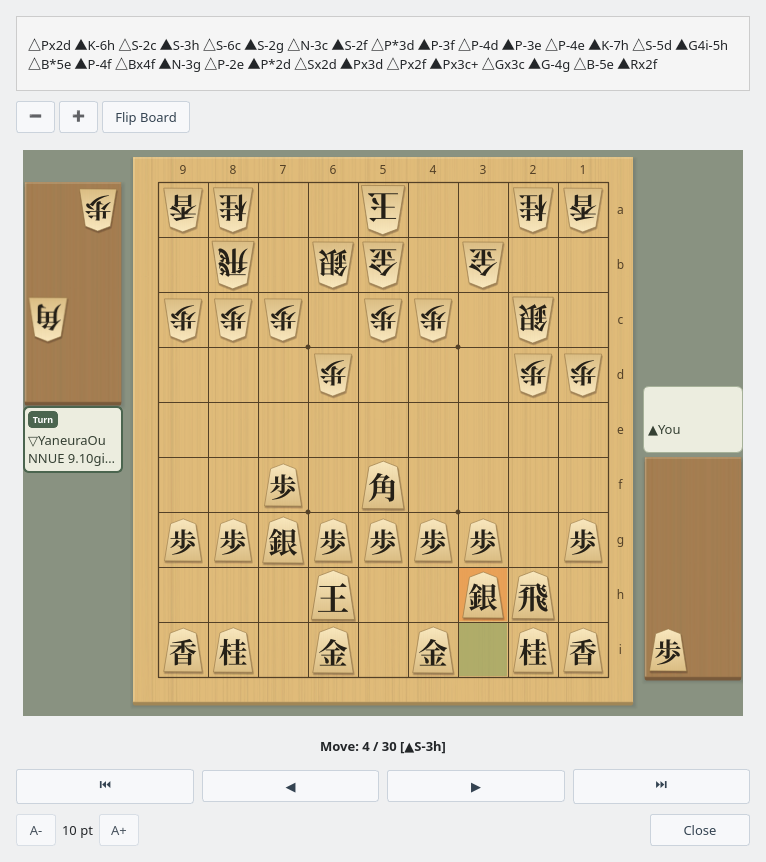
Principal variation display: visualize the engine's line on a board
The evaluation graph shows how the position changes over the game and updates in real time during play.
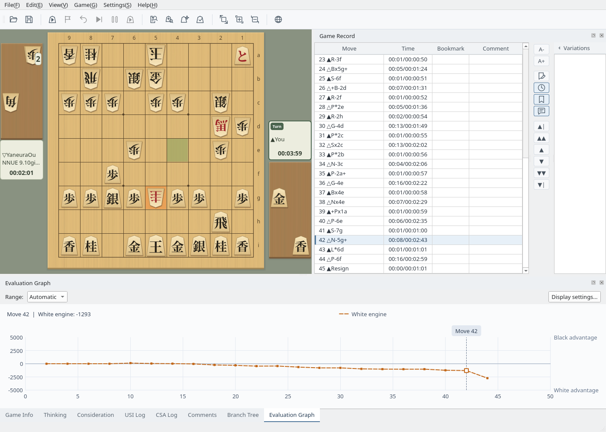
Evaluation graph: track the position in real time
The Game Info tab displays the game date, start time, Black and White players, handicap, time control, end time, and other details.
Double-click a value to edit it. Click “Update Game Info” to apply the changes to the game record; they are written to the file when you save the record.
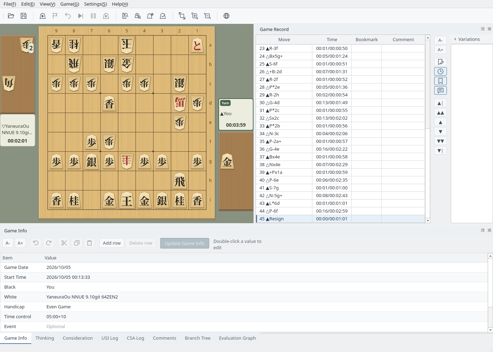
Game Info: details about the game
The Branch Tree tab shows moves in variations as well as the main line. If you use Take Back during a game and then play a different move, the moves you actually played become the main line and the moves you took back remain as a variation.
To continue from an earlier position, select it in the game record and start a new game with Starting Position set to Current Position; the new moves are recorded as a variation. If you select the move where a game was interrupted (中断), the new moves continue that line instead of starting a variation. If you select another game-ending move such as a resignation, play continues from the position just before it.
When you continue a loaded game record from a later position, its game information such as the players and the handicap is kept, and the new players, start time and time control are recorded as a comment on the first new move. The cumulative time used continues from the totals in the record.
When no game is in progress, you can also add a variation by moving a piece on the board (see Branch Tree).
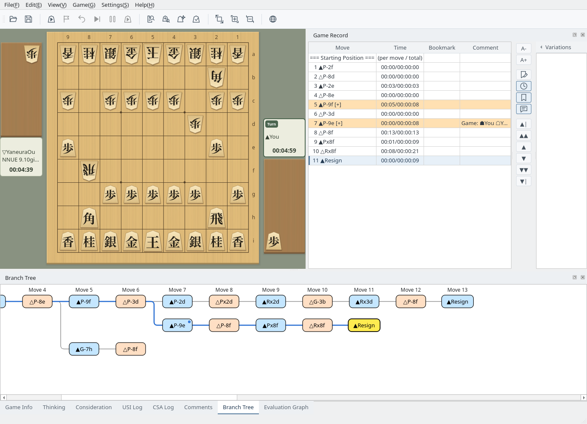
Branch Tree: the moves taken back with Take Back branch off at move 5, and the game continued from move 6 branches off at move 7
Repetition (sennichite) is detected automatically during a game. When the same position—the same board, pieces in hand, and side to move—appears for the fourth time, the game ends in a draw. If one side gave check with every move while the position was repeating, it is perpetual check, and the side giving check loses.
When the game reaches the Max Moves set in the game dialog, it ends as an impasse (jishogi), which is a draw. In each case the result appears in the Game Over message and is recorded at the end of the game record. Game record formats have no term for perpetual check, so it is recorded as “Win by illegal move” or “Loss by illegal move” against the side that kept checking, and the result is kept in every save format, such as KIF and CSA. These checks apply to human vs. engine, engine vs. engine, and human vs. human games; in CSA network games, the server’s decision applies.